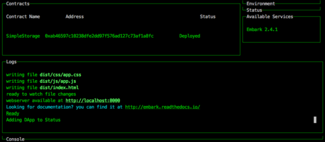
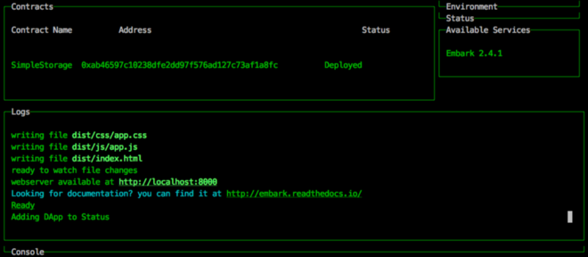

Starting a DApp on Status with Truffle and Embark
(warning: the Truffle/Embark functionality is still a work in progress. Come ask in the Slack if you hit bumps!)
Web 3.0 is here! The new distributed web gives new building blocks to developers and entrepreneurs to create new Distributed Apps, or DApps. And Status helps put your DApp in the hands of mobile users across the globe.
In this tutorial, we’ll use the Truffle and Embark frameworks to create a basic DApp ready for further development, and we’ll deploy it on mobile using Status. After we’re done, you’ll be ready to continue developing your DApp, and when you eventually go live, your users will be able to access your DApp by browsing through the Status app, the Chrome MetaMask extension, or the Ethereum Mist browser. One development process, three ways of accessing your DApp!
A Quick Overview Before We Get Started
Broadly speaking, for both Truffle and Embark, you’ll get the Status app running and connected to your computer, either on a simulator or on a real phone. Next, you’ll install some necessary dependencies. Then, you’ll start testrpc, a mini-Ethereum network that runs on your computer. Finally, you’ll install the Status Truffle box or the Status Embark plugin, create a basic demo app, and add it to Status.
Installing Status
To develop on Status, you need to have Status running either:
-
on a real phone,
-
in an Android simulator, or
-
in an iOS simulator.
You can go to https://test.status.im to download for Android. At the time of writing, we’re out of invitations for Testflight iOS, but you can sign up for early iOS access on our website.
If you are running in an Android simulator, you also need to run on the command line: adb forward tcp:5561 tcp:5561
If you don’t have a smartphone, or you only have an iPhone but want to get started right away, you can build Status yourself for either Android or iOS by following these guidelines. Following those guidelines, you can install an Android simulator, or start up Status in the Xcode simulator. Our wiki guidelines should be all you need, but if you get lost come ask around in our Slack.
Enabling Debugging

With your phone connected, /debug “On”
We’ll assume you have Status open, and that if you’re using a physical phone it’s connected to your computer. Now we need to enable debugging from within the Status app. After you’re logged in to Status, click on Console and run /debug, then pick “On.” You’ll get back a message telling that debugging is on, and that you can use the status-dev-cli tools if you want. You don’t need those right now, because you’ll be using the pre-configured Status Truffle box or the Embark plugin.
The message also shows you your IP address, which you’ll need later for Embark.
Installing Git, Node, and NPM
We’ll use the version control tool Git to install the Truffle and Embark frameworks. If you have Xcode installed, Git is probably already installed. To see if it’s installed, open Terminal or any command line program and just enter git. You should see a list of common Git commands. If you don’t, you can install Git with these instructions.
We’ll also use node and the Node Package Manager (NPM) to install some dependencies, so make sure you have the latest versions installed. In particular, testrpc will complain if you don’t have at least Node 6.9.1.
On OSX, the easiest way to install node is with Homebrew. You can run brew install node, and the check the version with node --version.
Installing testrpc
To install testrpc, you just need to enter this on your command line:
npm install -g ethereumjs-testrpc
What’s testrpc? When you deploy your DApps, you are asking the Ethereum network to create an address for them. When you use your DApps, you pay the Ethereum network for the steps that your code takes. Your DApps talk to the Ethereum network through remote procedure calls, or RPC’s. A local network makes this whole process very fast, so that it’s easy to develop your DApps. Essentially, testrpc gives you a small Ethereum network on your computer.
For more about gas and ether, see the top answer on this StackExchange question.
Using Truffle
While the steps up till now apply to using both Truffle and Embark, now we’ll cover steps specific to each framework. Let’s start with Truffle. If you just want to use Embark, you can skip to the next section.
Running testrpc
If you try to run truffle migrate in the next section without testrpc running, it’s going to give you an error. So let’s get it going. Open Terminal or any command line program and enter the command:
testrpc
That’s it! It will show you a list of available accounts, private keys, Wallet, and mnemonic.
Now open a new shell (such as a new Terminal window or tab) for the next part. You’ll leave testrpc running in the first window, and use the second window for the rest of the tutorial.
Installing Truffle
Now that you have testrpc running, and a new shell open, you’ll run:
npm install -g truffle // Version 3.0.5+ required.
This installs the Truffle framework, and you can find its GitHub page here.
With the Truffle framework installed, we can grab the Status Truffle Box, and get a basic DApp running. All the Truffle boxes also include the app frameworks React and Redux, which were designed by Facebook and are widely used by app developers. You can find the other Truffle boxes here, but for this tutorial you should use the Status Truffle Box, because it’s set up to be added to Status.
To install the Status Truffle box, all you have to do is run this command in the same Terminal window:
git clone [https://github.com/status-im/truffle-box-status.git](https://github.com/status-im/truffle-box-status.git)
With the Status Truffle box successfully cloned, let’s walk through the next steps of running your DApp.
# Change into the truffle box directory
cd truffle-box-status
# install the node dependencies
npm install
 Example on OS X: testrpc running on the left, and installing Truffle on the right
Example on OS X: testrpc running on the left, and installing Truffle on the right
# Compile the contracts from Solidity (much like JavaScript) into
# runnable EVM code
truffle compile
# Publish the compiled contracts to your network. testrpc must
# already be running
truffle migrate
As you run the migrate command, you can look at the window with testrpc running, and you’ll see your transactions being published to your local network.
Running our Truffle DApp on Status
Now we are ready to see our DApp running on Status.
From within your DApp directory, run:
# Run your JavaScript
npm run start
This should tell you that the the app is running, and that the DApp has been added to the Status Contacts.

The DApp added to the default Contacts
After you’ve clicked on your DApp within Status, you’ll see that the chat area at the bottom shows /browse [http://localhost:](http://localhost:8080/)3000/ for iOS, and /browse [http://10.0.3.2:3000/](http://10.0.3.2:3000/) for Android.
In fact, you can also browse to that address from Console with the command /browse, just like you could browse to any other web address inside Status. You can also enter that address into your browser, and you’ll see the same thing.
Using Embark
Now that we’ve covered Truffle, let’s take a look at Embark.
Installing Embark and Starting the Network
Now that you have Status running and your dependencies installed, you’ll run:
npm -g install embark
This installs the Embark framework, and you can find its GitHub page here.
With the Embark framework installed, we can make a demo DApp:
embark demo
#change into the directory
cd embark_demo
Next we want to run the network. You can run a full Ethereum node with embark blockchain, but for development you probably want to run testrpc with:
embark simulator
Configuring our Embark DApp forStatus
Now we are almost ready to see our DApp running on Status — this part is short and easy. Open a new shell tab in the same DApp directory, and run:
npm install embark-status --save
In the same directory, open the file embark.json and edit the plugins key:
"plugins": {
"embark-status": {
"deviceIp": "your-device-ip",
"whisperIdentity": "dapp-test",
"name": "MyDapp"
}
}
You can get the device IP from the Status Console, which was shown after you ran /debug “On" above. For instance, if /debug told me my IP was 10.0.3.15, the entire embark_demo/embark.json file would look like this:
{"contracts": ["app/contracts/**"],
"app": {
"css/app.css": ["app/css/**"],
"images/": ["app/images/**"],
"js/app.js": ["embark.js", "app/js/_vendor/jquery.min.js", "app/js/_vendor/bootstrap.min.js", "app/js/**"],
"index.html": "app/index.html"
},
"buildDir": "dist/",
"config": "config/",
"plugins": {
"embark-status": {
"deviceIp": "10.0.3.15",
"whisperIdentity": "dapp-test",
"name": "MyDapp"
}
}
}
Finally, if you’re running Status on Android, enable port forwarding with:
adb forward tcp:5561 tcp:5561
Running the DApp
Now we’re ready to run the DApp on Status. From within your DApp directory, run:
# start your DApp
embark run
The Embark console will appear within your shell with useful information about the SimpleStorage contract it has created, compiled, and deployed. It will also tell you that the DApp has been added to Status!
 

The Embark simulator runs in one Terminal window on the top, and the Embark console on the bottom
You should be able to tap the Contacts tab within Status and see your DApp there. After you’ve clicked on your DApp within Status, you’ll see that the chat area at the bottom shows /browse [http://localhost:](http://localhost:8080/)8000/ for iOS, and /browse [http://10.0.3.2:8000/](http://10.0.3.2:3000/) for Android.
In fact, you can also browse to that address from Console with the command /browse, just like you could browse to any other web address inside Status. You can also enter that address into your browser, and you’ll see the same thing.
You’re Off to the Races
Using Status, you can now develop mobile DApps as easily as developing for MetaMask or Mist! But Status offers extra goodies as well.
In particular, Status will help you allow your users to chat with your DApp! The chat interface will let your users easily and intuitively accomplish tasks. In the future, your users will be able to hold group conversations where all the other participants are DApps, which is kind of amazing.
Later we’ll have an easy mechanism to make your DApp available for others to use on Status, but for now please just submit a pull request using our guide on adding DApps.